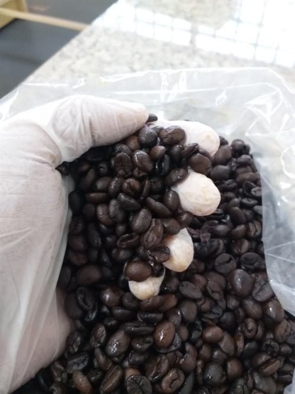

Chegando de Patrocínio-MG em Luziânia em 2017, a indústria do Café Três Colheres veio com inovação, trazendo um café torrado e moído apenas com grãos selecionados do tipo Arábica.
Isso faz com que o Café que chega até a casa do consumidor, tenha a melhor qualidade possível, tendo em vista que não existe misturas ao grão que é torrado!
Abaixo como podemos ver, está os grãos que são torrados de maneira uniforme, garantindo sempre o mesmo sabor, e a mesma qualidade:
Veja alguns de nossos produtos oficiais.
Localização
Estamos localizados em:
Luziânia na Quadra 76, Lote H, Parque Desportivo Brasília (Roosevelt).